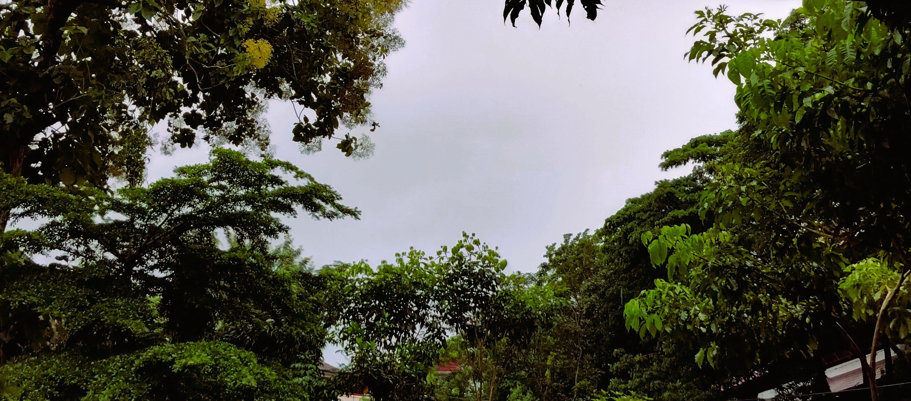

.png)
What do we call 'home?'
Sometimes, we use the words house and home synonymously, but there’s actually a distinct difference between these two words. A house is the place where we’re supposed to feel home, meanwhile home can be anywhere we feel like it. Throughout our life, we’ve probably have found some places—other than our own house—that feel like home. When we talk about what we can call ‘home’, we don’t always refer to a certain place. Instead, we can refer to a condition, a certain someone, or even a memory that feel like home. This explains that the reasons why some places feel like home are not simply because of the places.
In my mind, home is wherever we feel at our most comfortable stage. At home, we feel free to do anything for fun, to open up our feelings, to express our emotions without getting anxious. It’s also a place where we feel important, respected, and loved. To put it simply, home is any places that make us feel like we belong to. Some places feel like home because those places are filled with our loved ones that care about us. Just like a family house or anywhere we can gather with our closest friends. On the contrary, some places feel like home because no one is there so that we feel free doing anything and express ourselves freely, like how some people enjoy being at a quiet place. Besides, some also feel home as they provide things that we love. For instance, a reader may consider a library as home. Another reason why some places feel like home is because we’re so used to those places. Simply being there feels so normal and comfortable, meanwhile it feels weird to not be there for a while.
Well, apparently, places that feel like home are either the places we feel loved, or the places that provide what we love, or simply the places we love, or all of it at one.